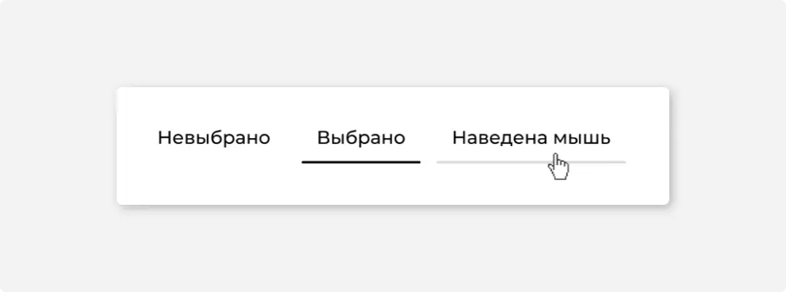
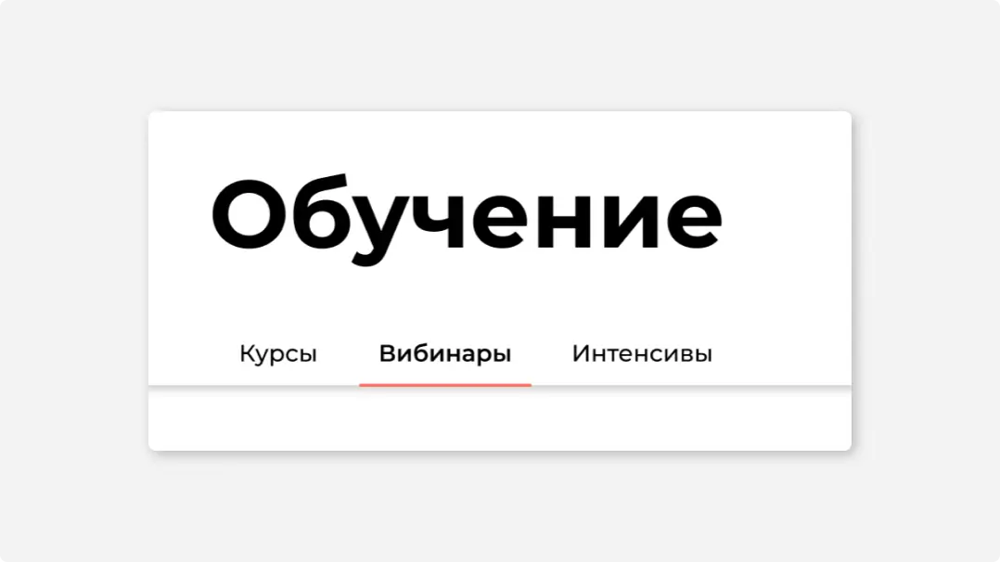
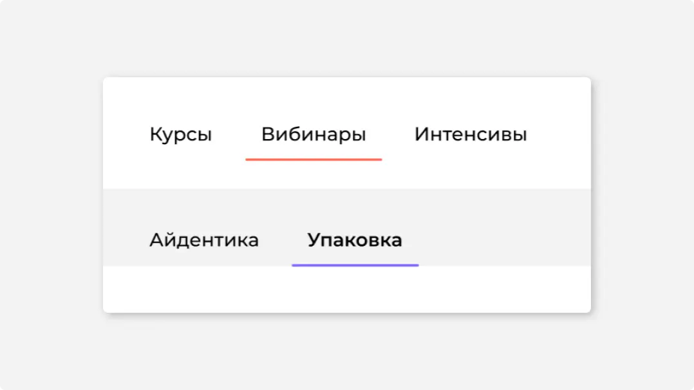

#1
Назначение
Табы группируют контент и помогают в навигации. Не используйте табы для основной навигации.
Используйте табы для группировки или фильтрации контента.
Не используйте табы для переключения состояний — для этого есть радиокнопки, тоглы и переключатели.
#2
Описание работы
Делайте кликабельную область большого размера, чтобы в нее проще было попасть курсором.

При наведении курсор превращается в палец, полоса у пункта перекрашивается в цвет Gray LN.
Разделяйте табы и контент. Так интерфейс лучше читается.
#3
Цвет
Красьте полоску-маркер в фирменный цвет сервиса. Используйте один цвет на весь сервис. Не красьте разные табы в разные цвета. Не кодируйте цветом «хорошие» и «плохие» пункты.
#4
Состояния